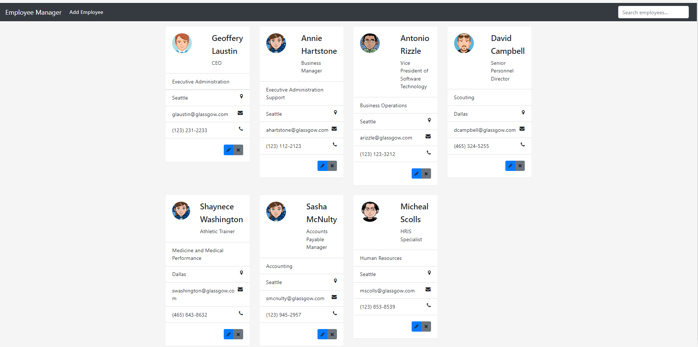
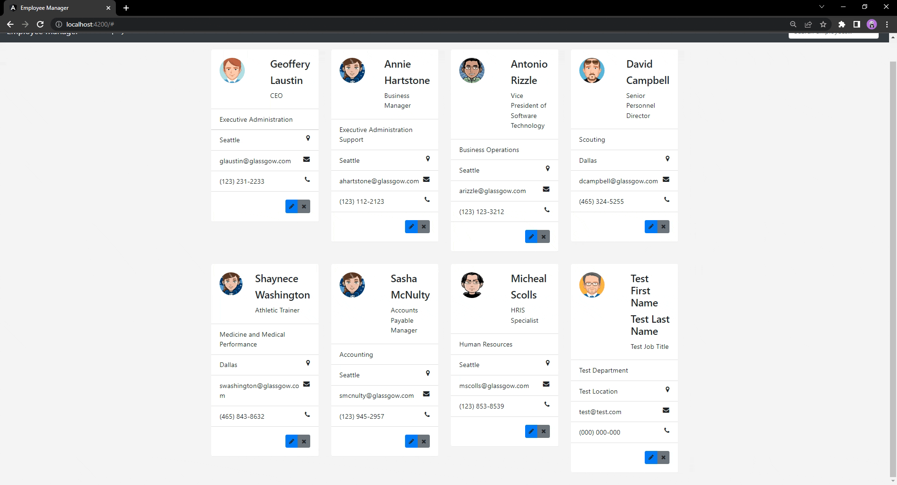
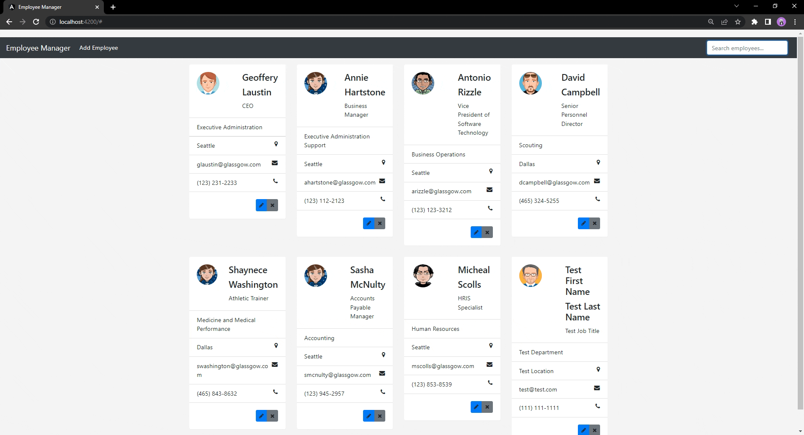
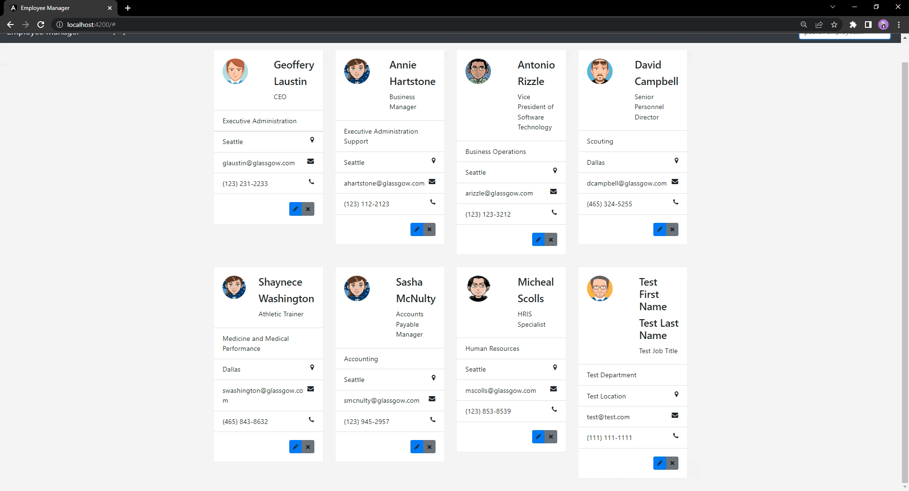

Full Stack Application
This was a personal project.
I wanted to create a fullstack app that met the requirements that I have commonly seen in job descriptions for software developers in Java. There were certain criteria that I wanted to cover such as CRUD opperations, a frontend JS framework, a backend JAVA framework, and using an API.
After looking at several sources, the Spring Boot Full Stack with Angular by Amigoscode covered everything I was looking for in a starter project.
For the backend, the project covered Spring Boot and MySQL using the Spring Data JPA. It also showed how to define and create a spring boot API, exposing the API endpoints over HTTP, and how to handle HTTP requests through those endpoints. The API endpoints were also tested using an HTTP client and the browser DevTools.
For the frontend, the project also used Angular components, forms, routing and services. The project has Angular HTTP communciation as well.
When openning the application, the saved employees will already show on the dashboard if they were present from a previous use; if there are no employees in the database, then a prompt that shows "no employees" will show. So, the dashboard does not just reset after every start of the application.
A user can add and save a new user as seen below.
The user can also open an employee card to edit their information.
The application also has a searching feature as demonstrted below using different information.
Deleting an employee card is also an available operation with a second warning window.
As portrayed, all CRUD operations are available on this application.